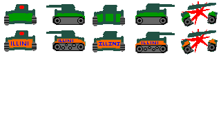

| ECE291 | Computer Engineering II | Lockwood, Fall 1997 |
| Assigned | Thursday, November 13, 1997 |
| Due Date | Tuesday, November 25, 1997 |
| Points | 50 |
Using this routine routine; along with the polygon rendering, animated background, and keyboard control developed in MP4; we will then create animated missions for our tank(s) in our electronic, 3D-battlefield.
A screen dump of one such mission is shown below:
For this MP, we will specify the scaling factor as a percentage. For scaling factors above 100, the image becomes larger. For scaling factors below 100, the image shrinks.
To provide smooth, continuous motion, we must be able to render an image at all possible scaling factors. This includes non-even multiples and divisors of 100.
Image scaling involves resampling of the pixels (both in of the x and y directions). It is easy to reduce the size of an image by 50%, (just plot one pixel for every other pixel in the original image). Likewise, it is magnify an image by 300% (plot three duplicate pixels for every pixel in the source). Scaling at the in-between values, however, is more difficult. A scaling factor of 137, for example, requires that the image size increase by an akward 37%. Spend a moment to think how you would scale such an image... (Really, I mean it - pause here and think about it. Consider a small image image with 4x4 pixels).
For any given scaling factor (SF), N is equal to the integer quotient of SF/100. Each pixel in the source should be always be copied N times to the destination. The remainder of SF/100 to holds a value proportional to the Extra (E) faction of pixel not copied. As with Bresenham's algorithm, as we plot each pixel, we can compute a sum of E. When E reaches the width of a pixel, we should plot an extra pixel and subtract a full pixel width from E.
For the ScaleTank routine, (XPos,YPos) specify the center of the image. The position can be anywhere in the X-Y plane -- even at outside of the (0,0)-(319,199) screen. If any part of the image is visible, it should be rendered on the screen. If the region is not visible; it should not be rendered.
The boundry conditions determine where to start reading the source image and where to start writing the result. Note that the left edge of the image can be determined as One half of the scaled width of the tank. The same applies to the other edges.
The 'MAIN 3' test case exercises most aspects of scaling and boundries.
To optimize performance; start with your inner-most loops and work outward. Think of ways to avoid performing long calculations on every pixel.
Ten points of this machine problem is based on the speed of your ScaleTank routine. You will receive full credit if and only if your code is as fast as Lockwood's cripled library version of the 'MAIN 1' benchmark.
In the columns of the matrix, we can store 5 images of each tank, to representing 4 rotations and one explosion (rotation 0 referes to the head-on view of the tank). In the rows of the matrix, we can represent different players. In 'tankview.pcx' file (shown below), player 0 referes to the green tank, while player 1 refers to the orange and blue tank.
|  |
The pixels around the tanks were assigned to palette number 255. In order to draw non-rectangular objects in ScreenBuffer, interprete this as an invisible pixel. Do not plot this pixel from within the ScaleTank routine.
| Command Line | Test Case |
|---|---|
| MAIN 1 d | Illini tank in meadow (benchmark with d=0) |
| MAIN 2 d | Green Tanks vs. Illini Tanks battlefield |
| MAIN 3 | Interactive Demo (ESC=exit, +/- Zoom, Arrows=Move) |
| MAIN 4 d | Hall Demo (your code) |
| MAIN 5 d | Your Demo (your code) |
| MAIN 6 | TestRoutine |
// Battletank Simulator : Part II
// ------------------------------
// ECE291: MP5
// Prof. John W. Lockwood
// Unversity of Illinois, Dept. of Electrical & Computer Engineering
// ; Assistant Guest Authors: Mike Carter, Johanna Canniff
// Fall 1997
// Revision 1.0
// ------------------- New ScaleTank Procedure for MP5 ----------------------
// (You need to write the Assembly code for these routines in MP5.ASM)
extern void far ScaleTank(int XPos, int YPos, /* X,Y Position on Scren */ \
int ScaleF, /* Scale Factor: 100=100% */ \
char Rotation, /* Rotational View (0..4) */ \
char PlayerNum ); /* PlayerNum (0..4) */
extern void far HallDemo(int delay); /* Hallway Demo */
extern void far MyDemo (int delay); /* Demo of your own invention */
// -------------- Existing MP4/MP5 Procedures defined in MP5.ASM ------------
extern void far TestRoutine();
extern void far DrawPoly(int x1, int y1, int y3, \
int x2, int y2, int y4, \
unsigned char color);
extern void far LoadBackgroundPCX(char far *Fname);
extern void far LoadForegroundPCX(char far *Fname);
extern void far DelayTick(int clocks);
extern void far DrawBufferToScreen();
extern void far AnimateBackgroundToBuffer(int Horshift);
extern void far InstKey();
extern void far DeInstallKey();
extern void far ModeText();
extern void far ModeGraph();
// Procedures defined in LIBMP5
extern void far SetStart(); // From libmp5
extern void far mp5xit();
// External Variables
extern int far ExitFlag; // Variables defined in mp5.asm, Set in MyKeyInt
extern int far Xoffset;
extern int far Yoffset; // Note: _Underscore added to var names in ASM
extern int far Zoom; // Note: _Zoom is new: responds to '+' & '-' keys
// -------------------- Global variables in C routine ----------------------
int CloudPos = 0;
void TankScreen (int x, int y, int scale, \
unsigned char rotation, unsigned char tanknum) {
AnimateBackgroundToBuffer( CloudPos = (CloudPos+1) % 320 ); // Move clouds
ScaleTank(x,y,scale,rotation,tanknum); // Draw our tank in ScreenBuffer
DrawBufferToScreen(); // Write to screen
}
main(int argc, char* argv[]) { // Program Usage : 'MAIN testcase delay'
// Test Cases: 'MAIN 1 d ' : Illini tank in meadow (benchmark with d=0)
// 'MAIN 2 d ' : 4 Tank vs. 4 Tank battlefield
// d=delay 'MAIN 3 ' : Interactive (ESC=exit, +/- Zoom, Arrows=Move)
// (1/18sec) 'MAIN 4 d ' : Hall Demo (your code)
// 0=fast 'MAIN 5 d ' : Your Demo (your code)
// 'MAIN 6 ' : TestRoutine
int i=0;
int CloudPos=0; // Local variables in Main
int x, y, scale;
int x0, y0, scale0;
int choice;
int delay;
SetStart(); // Start Clock Timer (LIBMP5 call)
ModeGraph(); // Switch to 320 x 200 graphics
LoadBackgroundPCX( "horizon.pcx" ); // Load Graphics Data
LoadForegroundPCX( "tankview.pcx" );
if (argc == 3)
delay = argv[2][0] - '0'; // Set user-specified delay (3rd argument)
else
delay = 0;
if (argc > 1) switch (argv[1][0]) { // Read command line arguments
case '1': // Single Tank Demo (high speed)
x = -40; // Initially: Illini Tank on Left of screen (not visible)
y = 100; // Vertically Center
scale = 100; // Scaled at 100%
for ( ; x<120; x++) { // Enter screen from the left
TankScreen ( x, y, scale, 3 , 1); DelayTick(delay); }
for ( ; scale<750 ; scale+=5 ) { // Turn toward camera and advance
TankScreen ( x, y, scale, 0 , 1); DelayTick(delay); }
for ( ; x<220 ; x++) { // Move more to the right
TankScreen ( x, y, scale, 3 , 1); DelayTick(delay); }
for ( ; scale>10; scale-=5) { // Turn away and move back
TankScreen ( x, y, scale, 2 , 1); DelayTick(delay); }
for ( ; scale<100; scale+=1) { // Turn away and move back
TankScreen ( x, y, scale, 0 , 1); DelayTick(delay); }
for ( ; x<320 ; x++) { // Move more to the right
TankScreen ( x, y, scale, 3 , 1); DelayTick(delay); }
break;
case '2': // Two Tank Demo
for ( x=1 ; x<110 ; x++, x0--) {
AnimateBackgroundToBuffer( CloudPos = (CloudPos+1) % 320 );
for (y=0; y<4; y++ ) {
ScaleTank( x, y*40+10 , 31*y+27 , 3, 0); // Left Tanks
ScaleTank(320-x, y*40+10 , 35*y+17 , 1, 1); // Right Tanks
}
DrawBufferToScreen(); // Write to screen
DelayTick(delay);
}
AnimateBackgroundToBuffer( CloudPos = (CloudPos+1) % 320 );
for (y=0; y<4; y++ ) {
ScaleTank( x, y*40+10 , 31*y+27 , 4, 0); // Left Tanks
ScaleTank(320-x, y*40+10 , 35*y+17 , 1, 1); // Right Tanks
}
DrawBufferToScreen(); // Write to screen
DelayTick(30*delay);
break;
case '3': // Move around the screen using [LEFT], [RIGHT], [UP], [DOWN]
x = 160;
y = 100; // Start at Middle of screen
scale = 100;
InstKey();
while (ExitFlag!=1) {
x += Xoffset;
y += Yoffset;
scale += Zoom;
TankScreen ( x, y, scale, 0 , 1); // Illini tank at zero rotation
}
DeInstallKey();
break;
case '4': // Hallway Demo
HallDemo( delay ); // Call ASM Routine
break;
case '5':
MyDemo( delay ); // Your Demo (You may write this in ASM or C)
break;
case '6':
TestRoutine(); // Useful For debugging (Use as you wish)
break;
default: ;
}
ModeText();
mp5xit();
}